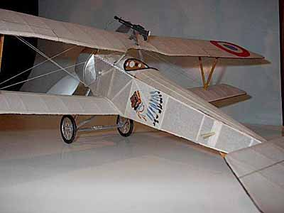
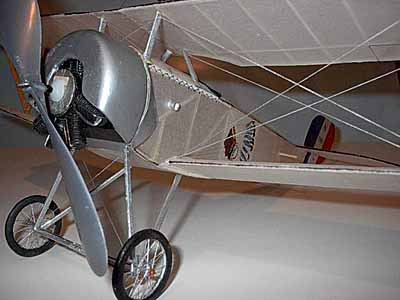
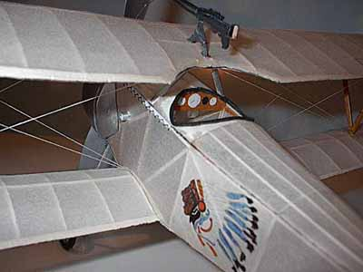

Nieuports
by Sterling Price

Here is an 8" span, 2 1/2 gram Pistachio Nieuport 17.
It was built from a 16" Megow plan reduced by 50%.

Here the Pistachio model hangs under a 19" Nieuport 11.
Note the Albatros wing the bottom of the frame.

| "This is my first attempt at pistachio, and I am still working on trimming it. That funny looking prop seems to work. This plane almost always has a major power stall, then recovers and does a few nice circles. Sometimes it is tail heavy, then nose heavy. Very confusing. |



|
"Nieuport 11: 19" Supposed to be Raul Lufbery's from Laffayette Escadrille.
Very stable and predictable flyer. For some reason the Nieuport 11-17 design
works very well for freeflight."
Sterling |
Copyright 2001, Thayer Syme. All rights reserved